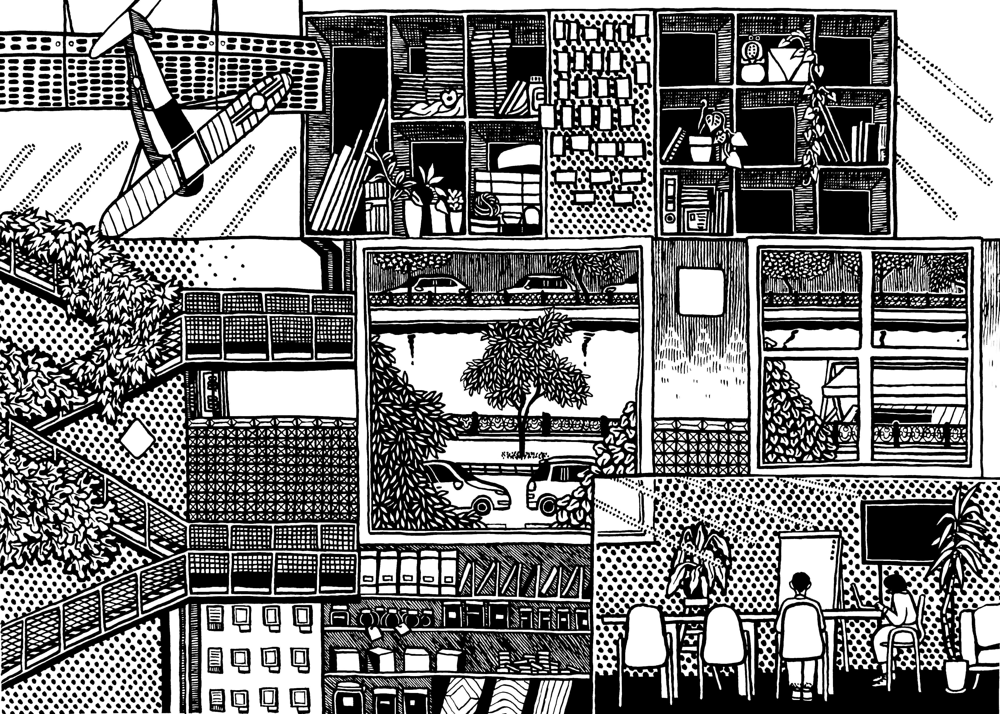
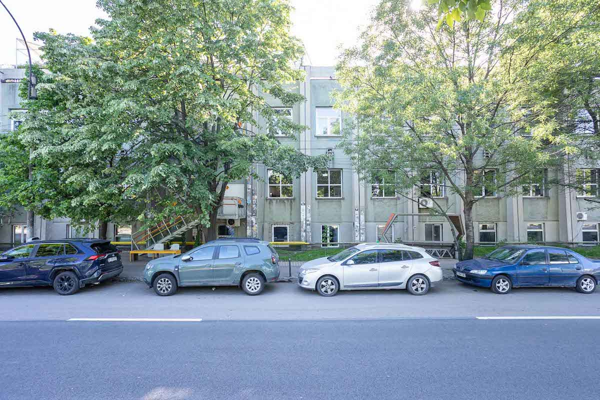
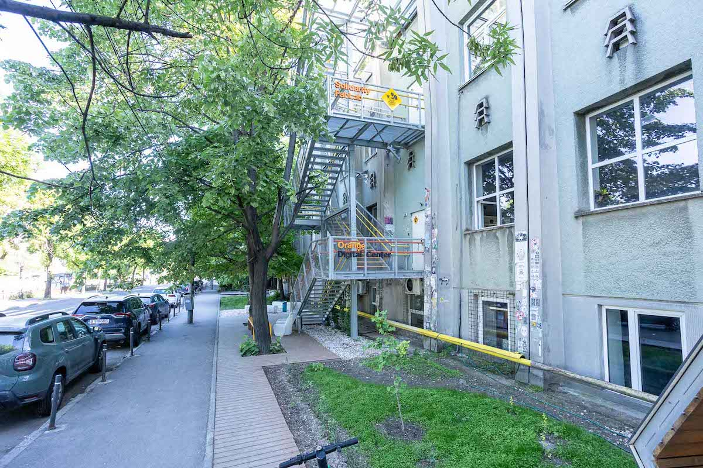
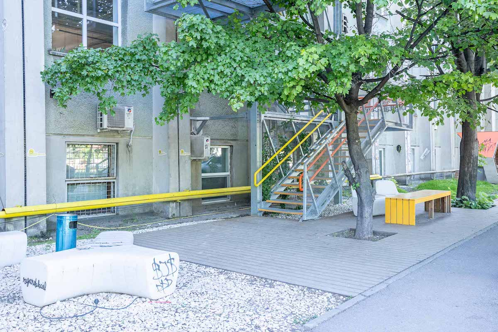
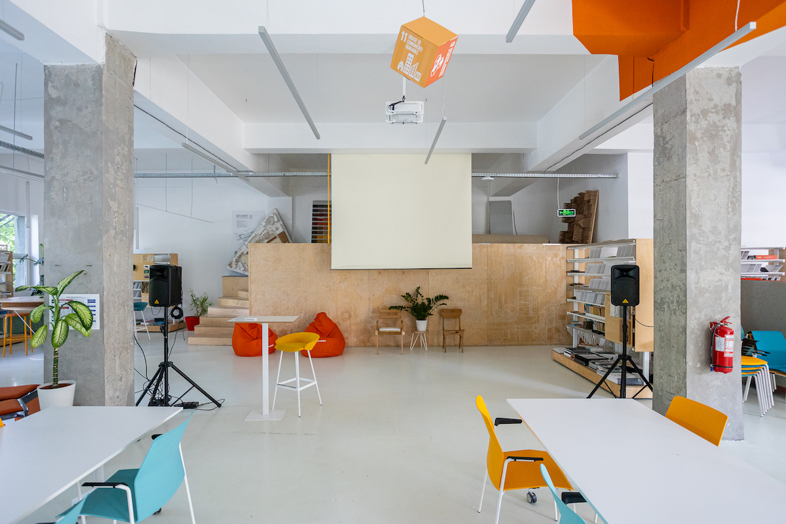
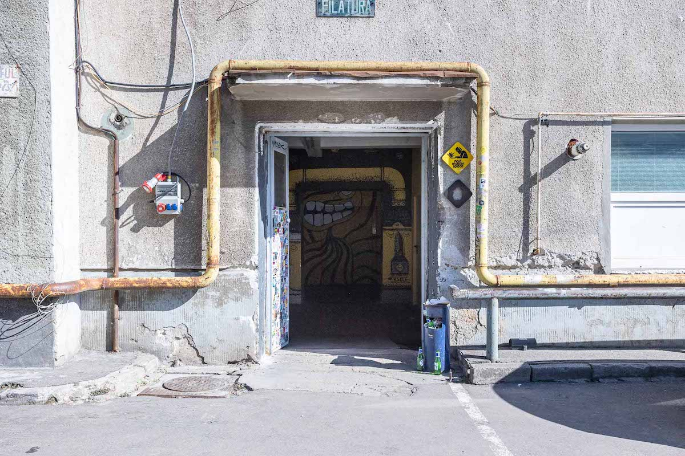

Complexul industrial în care se află Nod a fost înființat în 1920 cu scopul prelucrării bumbacului, iar pe atunci se afla la marginea orașului. În jurul anilor 70, după mai multe etape de dezvoltare, ajunge la o suprafață de aproximativ 1.8 hectare, devenind cel mai mare centru de prelucrare a bumbacului din România. După Revoluție fabrica a fost privatizată, iar contextul economic defavorabil și declinul general al industriei textile din România fac ca spațiul să-și reducă treptat activitatea, până la încetarea sa definitivă la începutul anilor 2000. Urmează o perioadă de 10 ani în care corpurile din fosta fabrică sunt închiriate ca centre logistice, depozite de hârtie igienică sau service-uri auto, care au contribuit și ele la degradarea clădirii și la transformarea întregii zone într-un loc ostil pentru pietoni.
Nod Makerspace își găsește un spațiu aici în 2015, la etajul doi al unui corp neutilizat de 650 de metri pătrați al complexului industrial. Alături de cei de la DESCHIS Gastrobar, formează a doua generație, după Atelierul de Producție, de inițiative de ocupare și reutilizare a fostei fabrici. Între timp, datorită contextului creat de ei, își deschid sediul aici multe alte spații, precum La Firul Ierbii, teatrul Recul, Protohub, coworkinguri și alte ateliere independente. Astfel, în decurs de câțiva ani, și pe fondul unei sinergii naturale, o zonă industrială părăsită prin care nu ți-ai fi dorit să treci decât cu mașina a renăscut într-o insulă de activitate creativă.
Poate că ritmul rapid de dezvoltare al zonei se datorează și impactului pe care l-a avut activitatea de bază a Nod Makerspace. Scopul spațiului este de a facilita accesul la infrastructură tehnică, spațiu de producție și comunitate profesională creativilor din zona de design, arhitectură, inginerie sau antreprenoriat. Cei care își închiriază un loc aici au acces la ateliere de lemn și metal, echipamente de fabricație digitală, spații de coworking, studiouri private, săli de întâlnire și zone pentru evenimente. Cu alte cuvinte, rolul Nod a fost de la bun început acela de a crea o rampă de lansare pentru alte inițiative.
Cu timpul, activitatea Nod s-a extins în zona de programe educaționale, proiecte civice și inițiative urbane. În prezent oferă cursuri de prelucrare a lemnului, metalului sau operare laser, și au un etaj dedicat unui spațiu de coworking pentru cei care lucrează doar de la calculator. La același etaj cu spațiul de coworking se află și MATER, singura Bibliotecă de Materiale din România. În plus, cei de la Nod Makerspace au condus mai multe proiecte legate de revitalizarea Dâmboviței, care și-au pus amprenta pe râu în mai multe puncte importante din București.
Am vrut să aflăm mai multe despre Nod Makerspace și despre ce-și propun pe viitor, așa că am mers la sediul lor ca să discutăm cu Tamina, unul dintre membrii fondatori.
Urcăm pe scara exterioară de metal până la etajul doi al clădirii Industriei Bumbacului, unde se află Nod Makerspace. Înauntru, o bucătărie open space ocupă centrul unui fost spațiu industrial cu tavan înalt și pereți din beton. În jurul bucătăriei se află studiourile celor care au închiriat un spațiu aici, unele dintre ele separate cu pereți de sticlă, altele cu acces liber. Oricum, fiecare studio se delimitează natural de la sine ca o mică monadă. Unele spații sunt dominate de plastic, de aparatură electrică cu cabluri încâlcite și beculețe care pâlpâie intermitent. În altele, lemnul și metalul sunt îmbinate de mâna omului în construcții cu mecanisme complexe, care îți cer să le analizezi atent dacă vrei să le înțelegi funcția. Iar în alte spații predomină materia vegetală care populează mici ecosisteme în tot felul de terarii.
Coborâm la etajul unu printr-o scară interioară, neatinsă de renovările recente. În spatele unei uși grele de metal se află zona hiper modernă de coworking, și mai încolo biblioteca de materiale MATER, unde urmează să ne întâlnim cu Tamina. Biblioteca, singura de acest fel din România, conține mii de mostre de materiale, de la tipuri de piatră și lemn, la cristal și marmură. Cei care lucrează în atelierele de la etaj pot să vină aici ca să găsească cea mai potrivită materie în care să-și îmbrăce următoarea lucrare; iar lângă fiecare mostră este atașat și contactul producătorului, dacă vor să plaseze o comandă. Dar pe lângă utilitate, biblioteca de materiale are și efectul de a inversa ierarhia vizibilității dintre materie și formă. Materia, care de regulă joacă rolul secundar în duo-ul care ne dă realitatea, iese aici în plină forță la rampă. Iar odată ce ai prins firul materiei, identitatea ei se dezvăluie în spațiul din jurul tău: betonul și fierul structurii vechi a clădirii, lemnul, plasticul și sticla intervențiilor recente apar ca elemente distincte, culese din catalogul Bibliotecii.
Ne așezăm în jurul unei măsuțe lângă un geam mare care dă înspre Dâmbovița. O rog pe Tamina să ne povestească cum a luat naștere Nod Makerspace și cum s-a transformat între timp.
Tamina ne povestește că în 2015 făcea parte dintr-un grup de arhitecți care reconverteau case istorice în București, sub umbrela programului numit Calup, și aveau nevoie de niște ateliere în care să construiască lucrurile pe care le gândeau pentru aceste renovări. Asta i-a dus la fosta clădire a Industriei Bumbacului. Au început cu 600 de metri pătrați la etajul doi și cu bani puțini, câteva echipamente de bază, un CNC și munca a 20-30 de oameni, au reușit, în vreo șase luni, să transforme spațiul.
Dar și-au dat seama repede că administrarea unui astfel de loc îi depășește. „De aceea am zis: ok, trebuie să-l deschidem pentru toată lumea. Atunci am început să gândim makerspace-ul ca spațiu pentru publicul larg”. Așadar Nod Makerspace s-a născut din acest moment de recalibrare, cuplat cu viziunea mai amplă, dezvoltată împreună cu cei de la Wolfhouse Productions, de a transforma întreaga Industrie a Bumbacului într-un centru cultural-creativ.
Următorul an a venit cu o serie de provocări, dar și cu o oportunitate majoră. Pe de o parte, tragedia de la Colectiv a înăsprit regulile pentru toate spațiile industriale reconvertite, în care se încadra și Nod. Pe de altă parte, povestea unui spațiu industrial decrepit, reinventat de la firul ierbii, era fix genul de lucru cu care rezona Guvernul tehnocrat de atunci. Aceștia le-au făcut mai multe vizite, au organizat conferințe acolo și au răspândit povestea inițiativei lor pe mai multe canale: „Povestea în sine era foarte frumoasă: cum se reinventează un loc, cum atragi încet, încet tot felul de grupuri și inițiative civice și transformi ceva de la zero, de la firul ierbii, din nimic, practic. Așa s-a făcut tranziția, de la nevoia unui spațiu pentru noi, la un spațiu pentru toată lumea și la întrebarea mai mare: cum faci ca Industria Bumbacului să se transforme, astfel încât locul ăsta la care ținem noi, makerspace-ul, să poată funcționa”.
Ideea pentru spațiul de coworking a venit în 2017, când s-a eliberat etajul de sub Makerspace. Acolo era un fost depozit de hârtie igienică, insalubru, cu probleme grave de siguranță la incendiu, pe care nimeni nu voia să-l ocupe. Până la urmă l-au luat ei, ceea ce i-a dus într-o nouă etapă financiară dificilă. Planul era să transforme acest etaj într-un spațiu pentru cei care lucrau doar de la calculator. Așa s-a născut zona de coworking, care s-a dovedit mult mai rentabilă financiar decât makerspace-ul de la etaj: „Nu sunt multe makerspace-uri pentru că nu sunt profitabile. Asta nu e un business, e o platformă din care cresc multe alte proiecte. Cererea trebuia să o creăm noi, pe când la coworking, e automată”, ne spune Tamina.
Însă stabilitatea pe plan financiar a venit doar după ce Fundația Orange le-a propus să dezvolte împreună Solidarity Fab Lab, un program de cursuri vocaționale, plătite de fundație și gratuite pentru participanți: prelucrare lemn, prelucrare metal, laser, CNC router, design botanic, croitorie. Publicul țintă erau persoanele vulnerabile, cu venituri mici sau cu dizabilități. „Atunci ne-am adunat o grămadă de traineri din comunitate și am compus cursuri. Încet, încet, s-a format programul. În 2022-2023, după opt ani, am găsit în sfârșit o stabilitate financiară pentru loc.”
Tamina ne invită la o plimbare prin spațiul de coworking. Ieșim din Biblioteca de Materiale, trecem de recepție și intrăm pe culoarul în care se află camerele de lucru. Designul modern din sticlă și lemn, cu soluții de iluminat ingenioase, te face să uiți complet că te afli într-un vechi spațiu industrial. Prin pereții de sticlă care separă camerele de lucru poți să vezi oameni la birouri lungi care tastează la calculator sau care stau adunați în jurul unor proiecții powerpoint. Una dintre camere este destinată nap-urilor, care, așa cum anunță semnul din lemn laminat de la intrare, nu ar trebui să depășească sfertul academic. Dar pilonii de beton ciobit care traversează camerele de lucru amintesc de o realitate diferită, în care o zi banală de lucru arăta cu totul altfel. Printre utilajele masive și zgomotoase care făceau să vibreze pereții de beton acum 50 de ani, dacă unul dintre angajații fostei fabrici ar fi reușit cumva să ațipească, și în vis ar fi traversat spațiul actual, probabil că i-ar fi fost greu să explice ce a văzut.
Ne întoarcem la locurile noastre în Biblioteca de Materiale. De la geam se văd pontoanele care plutesc pe Dâmboviță și câteva construcții misterioase la marginea râului. O rog pe Tamina să ne povestească despre ele, de implicarea Nod în revitalizarea râului și despre cum a luat naștere Dâmbovița Delivery.
Bucureștiul, ca multe alte orașe, a fost fondat în jurul unui râu. În apele curgătoare ale Dâmboviței oamenii găseau răspunsul pentru multe dintre nevoile lor esențiale. Râul oferea o sursă de apă potabilă atât pentru ei cât și pentru animale, era forța mecanică care alimenta morile amplasate la marginea sa, și oferea resursa principală în lupta împotriva incendiilor. Uneori, însă, apa era folosită și pentru îmbăiere, sau pentru a deversa gunoaiele orașului, practici de regulă condamnate de autorități.
Însă chiar dacă Dâmbovița juca un rol esențial în a susține viața orașului, erau și momente când o amenința. Ploile abundente duceau frecvent la inundații, unele dintre ele majore, iar brațele râului deveneau deseori insalubre. Primele încercări oficiale de a combate aceste minusuri au avut loc în decursul anilor 1880-1883, când albia râului a fost adâncită și lărgită. Însă râul așa cum îl știm astăzi a luat naștere ca urmare a modernizărilor suferite din anii 1980. Albia este modificată, se construiește colectorul subteran pentru ape uzate sub cuva apei curate, iar malurile sunt taluzate și îndiguite cu dale prefabricate din beton armat.
Astfel se încheie încă un capitol din lupta omului cu natura. Caracterul sălbatic și imprevizibil, cu potențial dăunător este complet dominat și aservit utilității, iar râul devine încă o parte docilă a infrastructurii tehnice a orașului. Însă această victorie a venit și cu prețul unor pierderi probabil invizibile logicii inginerești care a închipuit ultima fază de modernizare a râului.
Urbanismul actual consideră râurile ca parte esențială din infrastructura albastru-verde a unui oraș. Pe lângă rolul râului în reglarea termică a orașului și contribuția sa la biodiversitate, el este și un important spațiu social. Însă oricine s-a plimbat pe malul Dâmboviței în București știe ce nepotrivite ar fi aceste descrieri pentru ea. Un trotuar îngust te strecoară printre mașinile care vuiesc pe lângă tine pe o parte și de panta betonată a malului de cealaltă. Apoi, spațiul verde din jurul râului este neglijabil, iar dacă vrei să te ferești de soare, tot mai bine traversezi pe partea cealaltă. Sentimentul pe care ți-l lasă este că te-ai apropiat, pe propriul risc, de un element de infrastructură a orașului, și nu de o arteră socială, așa cum este râul în alte orașe europene.
Miza centrală a intervențiilor de revitalizare a râului desfășurate de cei de la Nod este aceea de a reintegra Dâmbovița în țesătura socială a orașului. Tamina ne povestește că planul lor de transformare a Industriei Bumbacului presupunea încă de la început și revitalizarea Dâmboviței. Venirea pandemiei în 2020 a adus răgazul de care aveau nevoie ca să poată iniția acest plan. Cum majoritatea activităților obișnuite se opriseră, s-a domolit și presiunea zilnică de a supraviețui financiar: „Eram tot în survival mode, dar nu prea mai aveai ce să faci. Atunci am zis: hai să începem să gândim niște lucruri pentru stradă și pentru râu”.
Prima provocare a fost aceea de a trezi interesul oamenilor pentru râu. S-au inspirat de la cei de la Street Delivery, pe care i-au invitat să le fie parteneri primii trei ani, apoi au continuat alături de cei de la fundația Patzaichin. Cu o mică finanțare de la Ordinul Arhitecților, au lansat prima ediție în 2020, care a avut rolul de experiment: „Au venit câteva sute de oameni. Nu a fost cu pietonalizare. Am făcut muralul de la intrarea de la gastrobar, am făcut plimbări pe apă și niște mici activări, cât să vedem ce înseamnă și cum funcționează”. Anul următor, în 2021, au reușit să obțină de unii singuri autorizarea pentru pietonalizarea Splaiului. Cinci ani mai târziu, au ajuns la aproape 30.000 de oameni la cele trei ediții care au avut loc în 2025.
Un aspect foarte valoros, ne spune Tamina, este că impactul Dâmbovița Delivery s-a scalat singur: „Important este că ideile au ajuns destul de departe și că tot felul de organizații și oameni și le-au asumat într-un fel sau altul”. În 2024 Fundația Comunitară București le-a propus rolul de proiect strategic în Platforma de Mediu pentru București, alături de Patzaichin, ca parteneri principali și „ca motorașe ale proiectului”.
În 2023, Asociația Mai Mult Verde le-a propus celor de la Nod să conceapă și să construiască un prototip de barieră plutitoare pentru colectarea deșeurilor. După multă cercetare și câteva experimente, a rezultat bariera care acum se întinde pe toată lățimea râului și strânge deșeurile plutitoare: „apoi vii cu bărcuța sau cu pontonul și le strângi. De atunci se tot fac igienizări pe apă, de către noi și câțiva locuitori ai orașului”.
Tot atunci a apărut și fântâna, un dispozitiv care transformă apa din Dâmbovița în apă potabilă, ca urmare a unei idei venite de la cei de la asociația Patzaichin. Sistemul, montat într-un corp cilindric albastru la podul pietonal, conține patru tipuri de filtre de apă, și a fost acoperit prin programul Departamentului pentru Dezvoltare Durabilă.
Plimbările gratuite cu barca au completat acest set de intervenții, posibile datorită unei flote achiziționate prin Platforma de Mediu. Apele Române, însă, tratează Dâmbovița ca pe un canal tehnic periculos, așa că plimbările sunt permise doar în cadrul evenimentelor oficiale Dâmbovița Apă Dulce.
În anul 2024, ne spune Tamina, au extins și amplificat intervențiile care s-au dovedit de succes - plimbări cu barca, bariere plutitoare și Dâmbovița Delivery - la alte trei debarcadere: Timpuri Noi, Națiunile Unite, Mihai Bravu. Abordarea din spate rămâne aceeași: „Sunt amenajări cu resurse puține, ceea ce se cheamă acupunctură urbană: amenajări minimale, cu soluții reversibile, care declanșează niște procese și îți arată cum se comportă oamenii cu locul.”
Anul acesta și-au propus să facă un acces la apă în Regie. În plus, va exista și o etapă de ocupare temporară a unei benzi de lângă apă pe ambele părți, gândită cu marcaje temporare și mobilier temporar, dar ocupată permanent câteva luni: „Va fi o altă formă de urbanism tactic, între Grozăvești și Petrache Poenaru. Regia, Politehnica, care sperăm să fie implementată cât mai rapid”.
În spatele fiecărei intervenții, ne spune Tamina, stă un număr tot mai mare de oameni. Anul trecut, la Dâmbovița Delivery, au fost implicați în jur de 270 de voluntari. Iar experiența arată că este mult mai eficient contactul direct al omului cu apa decât orice campanie. „Oamenii vin pe apă și se îndrăgostesc de apă, chiar dacă râul e un canal.” Oricum, contrar percepției generale, calitatea apei nu e nici pe departe atât de slabă pe cât ar putea să pară. La debarcaderul de la Operă, un ponton inteligent monitorizează acum calitatea apei, aerului, zgomotului și biodiversității. Proiectul i-a adus mai aproape de Facultatea de Biologie, care testa deja calitatea apei în 11 puncte din oraș, în scop didactic. Testele de calitate indică mereu o calitate medie a apei.
Pe termen lung, însă, schimbarea râului presupune multă planificare urbană, reglementare și procese participative întinse pe mai mulți ani. Viziunea este cea a unui coridor verde-albastru care să reapropie orașul de Dâmbovița, având ca orizont anul 2035.
Un pas în această direcție a fost concursul Dâmbovița 2035, ca o componentă importantă a programului Dâmbovița Apă Dulce, organizat împreună cu Patzaichin, pentru șase tronsoane ale râului. Cele șase viziuni câștigătoare au fost apoi transformate într-o campanie de comunicare și consultare publică, pentru a vedea cum reacționează oamenii la asemenea schimbări. A urmat un atelier de co-creare la BNR, cu 75 de profesioniști, organizat în trei etape: diagnostic, viziune, apoi principii și acțiuni prioritare pe termen scurt, mediu și lung. Rezultatul a fost sintetizat într-un document director care ar trebui să stea la baza unui viitor masterplan al Dâmboviței, inițiat de Primăria București.
Există, spune Tamina, o disponibilitate politică mai mare decât în trecut, dar proiectele mari au nevoie de timp. „Sunt pași lungi. Pe termen scurt, mergem în continuare la nivelul străzii și facem ce putem să facem.” Totuși, valul de inițiative recente aduce cu sine și riscul ca în perioada următoare lucrurile să se întâmple prea repede. „Prea repede înseamnă fără să fie implicate comunitățile și oamenii, să se trântească niște proiecte”.
Planurile de viitor ale Nod sunt în primul rând legate de nevoia de a supraviețui. În primii ani, Nod a contribuit la popularea Industriei Bumbacului. Tamina ne povestește că la început prezentau frecvent spațiul, primeau vizitatori și îi orientau pe cei interesați către locurile disponibile din ansamblu. În timp, aproape toate spațiile au fost ocupate de ateliere, inițiative civice, coworkinguri, un gastrobar, un teatru independent și alte activități creative. Această dezvoltare a creat, totuși, și problema care îi privește acum. Pe măsură ce zona a devenit mai atractivă, chiriile au început și ele să crească. Contractul pe termen lung care le-a oferit o perioadă de stabilitate s-a încheiat, iar din 2025 costurile au început din nou să urce. „Nu cred că o să mai rezistăm foarte mult. Adică doi-trei ani sunt ok, dar după aceea nu știu”, spune Tamina.
Pentru Tamina, cazul Industriei Bumbacului arată limitele regenerării urbane pornite de la firul ierbii. Inițiativele independente pot reinventa spații și pot forma comunități, dar fără sprijin administrativ și investiții publice procesul se oprește la o anumită scară. Această limită se vede și în problemele din jurul spațiului. Trecerea de pietoni din fața clădirii a fost ani la rând un punct periculos, iar Nod a depus încă din 2018 cereri pentru măsuri de reducere a vitezei. Semaforul a ajuns să fie instalat abia după mai mulți ani. La fel, scara de evacuare necesară spațiului a avut nevoie de un proces lung: autorizarea a început în 2016, autorizația a venit în 2020, iar banii pentru construcție au apărut doi ani mai târziu. Pentru Nod, astfel de exemple arată diferența dintre ce poate rezolva o inițiativă civică și ce depinde, în cele din urmă, de instituții.
Una dintre variantele urmărite pentru viitor este Berzei 21, o parcelă industrială din centru, aflată în proprietatea Primăriei, unde se află fostele hale REBU. Demersul a început în pandemie, împreună cu mai multe organizații, printre care Fundația Comunitară București, Cartierul Creativ, BAZA și Deschidem Orașul. Grupul a încercat să convingă Primăria să înceapă transformarea locului, a publicat o scrisoare susținută de mai multe organizații și a câștigat un premiu la Cities of Tomorrow. Propunerea este ca transformarea spațiului să fie făcută printr-un model de co-guvernanță, în care să participe mai multe organizații: „Terenul este al Primăriei și ea trebuie să facă ceva cu el, iar rolul societății civile ar fi să participe la acest proces”.
Pentru Nod, Berzei 21 ar însemna posibilitatea de a muta conceptul într-un cadru mai stabil. În alte țări, spune Tamina, multe spații cultural-creative funcționează în proprietăți publice, cu sprijin din partea orașului, regiunii sau statului. Un asemenea model ar putea fi mai potrivit decât dependența de o piață imobiliară în care succesul unei zone duce inevitabil la creșterea chiriilor.
Pe unul dintre pereții Bibliotecii de Materiale, o machetă tridimensională de 2x2 reproduce spațiul din Berzei 21. Clădirile din poliester sunt alocate câte unei organizații, printre care și Nod. Momentan, tranziția de la machetă la realitate, și la recuperarea unui nou spațiu industrial de către oraș este prinsă undeva într-un labirint birocratic. Ne luăm rămas bun de la Tamina și mergem să inspectăm mai îndeaproape construcțiile de pe râu. De pe podul care traversează Dâmbovița se pot vedea bine intervențiile recente. Bariera de colectare a strâns un braț de vegetație și câteva peturi. Mai în amonte, pe unul dintre pontoanele plutitoare, un pescar ars de soare își încearcă norocul. Cele două construcții plutitoare, sunt, poate, o dovadă că orașul poate fi recuperat.




